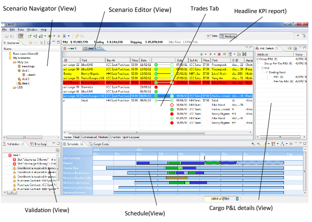

Table of Contents
LiNGO is an LNG portfolio optimisation and management software product. Featuring a rich, highly functional user interface (UI) and it enables business users to:
Model vessels, ports, cargoes, contracts, etc. data and constraints in detail
Evaluate complex contract and corporate P&L logic
Optimise ship scheduling and portfolio configuration (specifically, buy-sell pairs) to maximise post-tax group P&L.
Discover and exploit opportunities in both cargo and shipping markets.
Manage operations and analyse risk.
It is often highly customised, particularly around contract and entity P&L logic, reporting and systems integration.
LiNGO is based around Scenarios, a collection of data which completely defines a snapshot of the portfolio (cargoes, shipping, contracts, entities, as well as reference data for ports, vessels, port and canal costs, etc.). Scenarios are the self-contained data files and can largely be thought of as traditional files.
Users edit scenarios to reflect current business and operational conditions evaluate possible trading and shipping decisions. Built-in auto-validation checks all physical and commercial constraints and highlight violation to the user for correction.
We give here an overview of the application just as a user sees it. Other sections of this guide will focus on data model, common use cases and questions.
Firstly a note on the structure of the application, then descriptions of each part of the main Analysis screen (perspective), then followed by Reports and the Data perspective.
A view is a window which generally displays some data or diagram (such as the editing view. LiNGO has a number or carefully configured screens or Perspectives, which group together Views within a common context. For example, Analysis (illustrated) covers portfolio modelling and optimisation while Data contains and handles editing of all the reference data. 